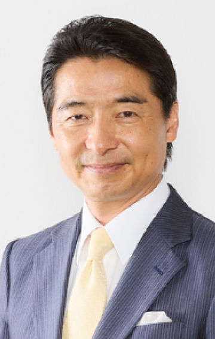

8.25（金）15：20～15：50
ChatGPTとノーコードによる内製化で企業のソフトウェア文化を変える
アステリアCXO（最高変革責任者）首席エバンジェリスト
中山 五輪男 氏
アプリ開発を他人任せにしてしまっている日本企業のソフトウェア文化を変えるキーワードがノーコードであり、またノーコードによるアプリ開発からデータ連携に至るまでの効率を高めるのがChatGPTです。この2つが内製化に与える効果についてデモを交えながら紹介します。